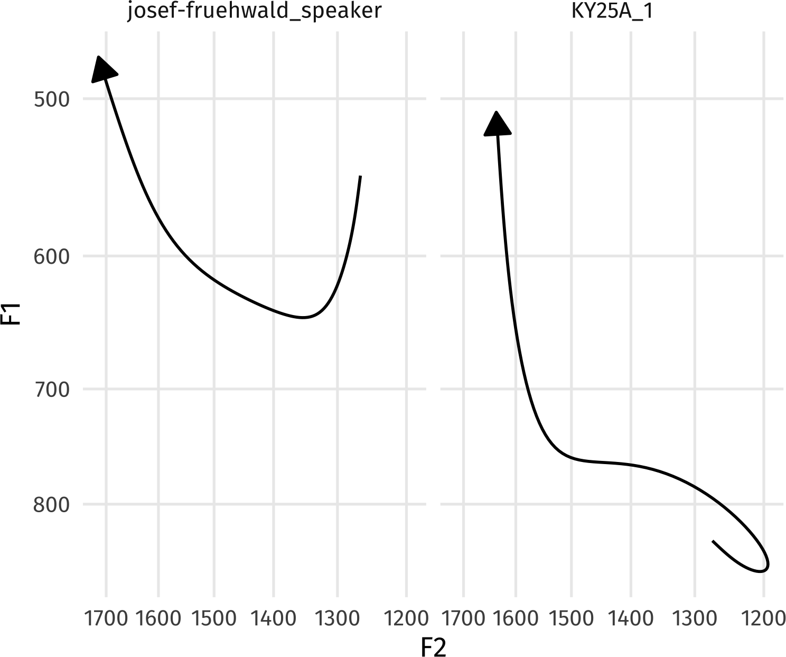
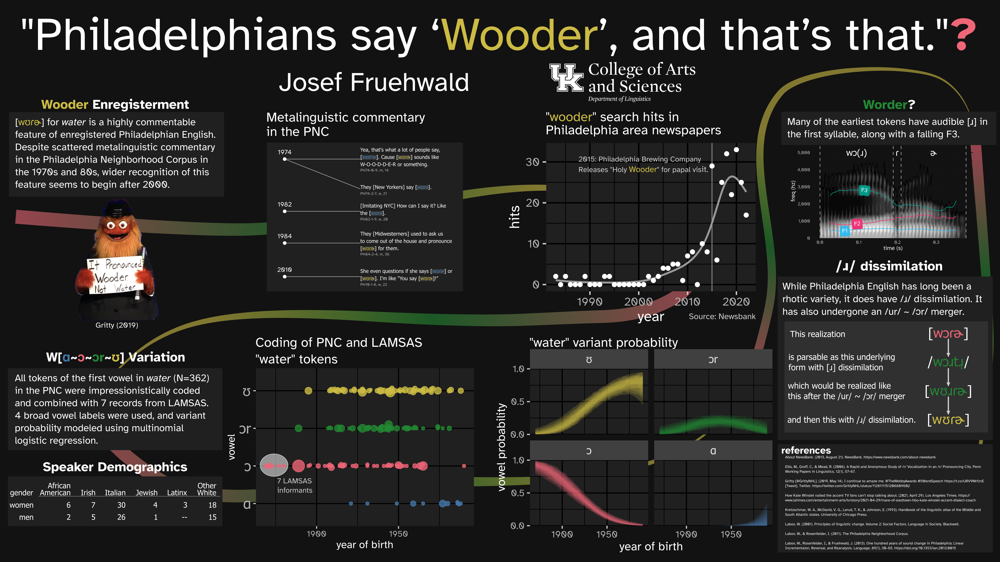
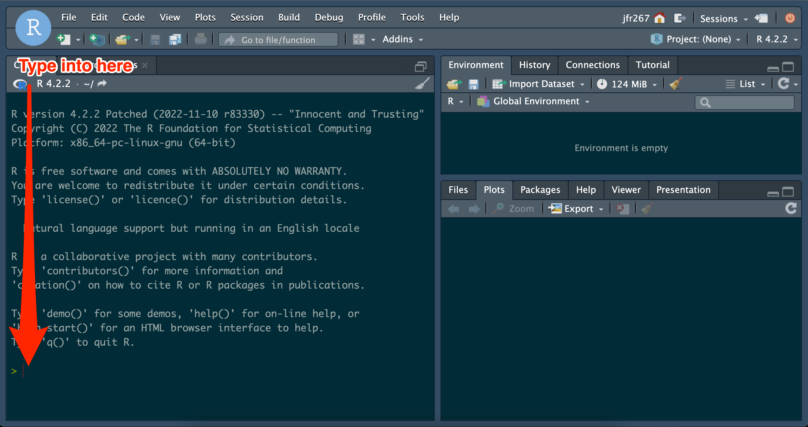

{gt}
Hello!
I try to implement the formal description of phonology and phonetics from @nelson2025 in python.
DCT coefficients are really useful!
Here’s a brief introduction to the new {tidynorm} package.
{tidynorm}

.Rprofile
_defaults.R
source(here::here("_defaults.R"))
dplyr::consecutive_id()

